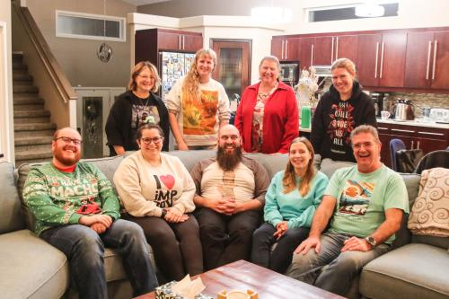

When they're out of minions but a mortal needs to face their past before they die, sometimes the god of death must step in.
It's just Tom's luck to both find out he's dying and to be escorted through his regrets
by a surly deity who's out of practice. At least his best friend Jackie (and her trusty cactus, Angie) are coming along as emotional support.
Written by Daniel Gilmour, who left the world's stage too soon. Cactus is a dark comedy about life, death, love and loss that we now perform in his memory.
Dates and Times
Thursday,
Saturday,
Monday,
Tuesday,
Thursday,
Friday,
Sunday,
July 17
July 19
July 21
July 22
July 24
July 25
July 27
2:15 PM
11:00 PM
12:45 PM
10:15 PM
3:45 PM
8:30 PM
1:15 PM

Jordan Philips
Jordan has been a part of Winnipeg's theatre scene for over fifteen years. He has written a number of plays, and both directed and acted with various theatre companies around the city. Some of his credits include Lame Is... (Sick+Twisted Theatre, 2017), Your Brain On Anxiety (Sheep On A Mission, 2018), Letters (Parachuting Camel Productions, 2019, 2020, 2022), Shakespeare's The Tempest (Indifferently Reformed, 2023), Glad To Be Here (Theatre By The River, 2023), and Captain Ted: Disabled Pirate (Strokes of Genius, 2024).
While they met some years previous, Jordan first got to work with Dan on The Beggar and the Wolf with Merlyn Productions in 2019. The last show they worked on together was a radio production of Letters: War Within with Parachuting Camel Productions which Jordan directed for release in 2024, making it Dan's final, posthumous performance. It is an honour to help bring Cactus to the stage in Dan's memory.
Hope Figueroa
Connor Hopper
Connor Hopper is a Manitoban performer, born and raised. He is a member at large for the Winnipeg Mennonite Theatre Society, but has contributed to many local plays and films with other groups.
His first time working with Dan Gilmour was in "Radio Nights" back in late 2017. From there he had the utmost pleasure directing Dan in "The Taming of the Shrew" and "You Can't Take it With You."
Most recently Connor has been seen on stage as the grumpy grocer Bob in "One Stoplight Town" and as the polarized roles of Son and Tom in "The Open House," both through WMT.
When not working with community theatre, Connor works hard to introduce his high school students to the performing arts, South of the city. Connor would love to thank his supportive friends, family, wife Ally, and cat Samwise for all of their love, patience, and encouragement.
Natalie Fitkowsky
Natalie Fitkowsky was born and raised in Winnipeg, and currently teaches English to high school students. In addition to teaching, she enjoys singing with the O. Koshetz Ukrainian Choir and acting in a variety of community theatre productions. Natalie met Dan while rehearsing for Winnipeg Mennonite Theatre's production of “You Can't Take It With You” in 2022. She is honoured to be performing in Dan's show, “Cactus,” as Stella.
Shane Jordan
Shane Jordan had the opportunity to work and laugh with Dan during his time with the BS Comedy players (2010-2019), making many local politicians laugh, and quite a few others grit their teeth.
Shane has also been on stage with “You Can’t Beat Fun” (University of Manitoba, 2002), “Tales from the Funny Box (Funny Box Theatre, 2009), and most recently as Captain Mal in “Pirates! Musical Mayhem” (Incantatem, 2023)